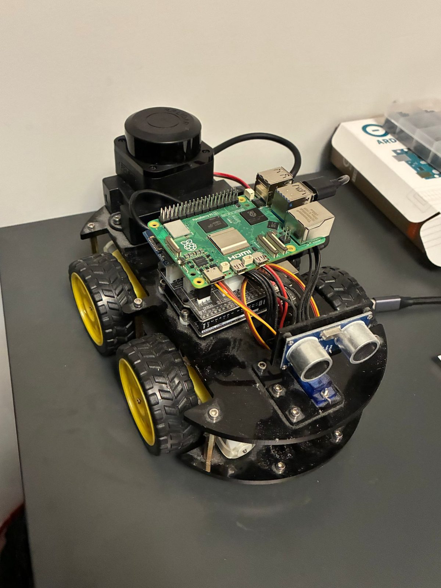

Hardware bring-up in progress

Overview ↑Overview
- No wheel encoders and no IMU, so I made the lidar the odometry: scan matching seeded by the motor PWM. 0.2–1.6 cm error after a 1 m square.
- A 2D lidar looks straight over stairs and through glass, so I used the kit's IR line sensors and ultrasonic to find those hazards and keep them in their own costmap layer.
- Sim showed the stock sensors miss edges hit at >36°, so I added two $1 IR modules. Falls went from 2 of 2 runs to 0.
Scout
Autonomous exploration rover. ROS 2 / C++ frontier exploration on a $60 ELEGOO kit car with lidar-only odometry, plus IR and ultrasonic to find and remember drop-offs, glass and low obstacles.
- ROS 2 Jazzy
- C++17
- Nav2
- slam_toolbox
- ICP
- AVR firmware
1.3 cmmean localization error, sim